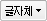
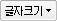
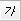
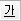
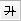
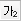
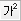
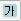

글자체(굴림체, 궁서체, 돋움체, 바탕체, Arial, Helvetica, Tahoma, Verdana)를 선택 할 수 있습니다.

글자크기(8pt, 12pt, 14pt, 18pt, 24pt, 32pt)를 선택 할 수 있습니다.
글이 굵게 변경됩니다

글이 기울림꼴로 변경됩니다.

글의 밑줄이 적용되어 변경됩니다

글의 가운데줄이 적용되어 변경됩니다

변경하고자 하는 영역을 선택하고 클릭 하시면 글의 하단부분에 첨자가 생성되는 아래첨자가 적용됩니다.

변경하고자 하는 영역을 선택하고 클릭 하시면 글의 상단부분에 첨자가 생성되는 위첨자가 적용됩니다
클릭 후 색상을 선택 하시면 글의 전경색이 선택된 색상으로 적용됩니다.

클릭 후 색상을 선택 하시면 글의 배경경색이 선택된 색상으로 적용됩니다.
영역을 선택하고 클릭하시면 글의 왼쪽 맞춤이 적용되어 변경됩니다.
영역을 선택하고 클릭하시면 글의 가운데 맞춤이 적용되어 변경됩니다.
영역을 선택하고 클릭하시면 글의 오른쪽 맞춤이 적용되어 변경됩니다.
영역을 선택하고 클릭하시면 글의 혼합 맞춤이 적용되어 변경됩니다.
영역을 선택하고 클릭하시면 글 라인의 앞 부분에 여백이 발생하여 글이 적용됩니다.
영역을 선택하고 클릭하시면 글 라인의 앞 부분에 여백없이 글이 적용됩니다.
클릭 하시면 글의 앞부분에 자동으로 글 번호가 적용됩니다. 이미 번호매기기가 적용되어 있는 경우 다시 클릭 하시면 원래 상태로 변경됩니다.
클릭 하시면 글의 앞부분에 자동으로 글머리기호가 적용됩니다. 이미 글머리기호가 적용되어 있는 경우 다시 클릭 하시면 원래 상태로 변경됩니다.
영역을 선택하시고 클릭 하시면 하이퍼링크 연결 속성창이 팝업으로 뜨고, 연결 내용 정보를 입력 후 확인을 선택하면 링크 연결이 생성됩니다.
클릭 하시면 입력 위치에 수평라인이 생성 됩니다.
이미지(jpg, gif, png 파일)를 삽입하고자 하는 영역을 선택하시고 클릭 하시면 이미지 속성 팝업창이 뜹니다. 팝업창에서 이미지를 올리시고 이미지 선택, 레이아웃, 테두리 부분을 선택 하신 후 'OK'를 클릭 하시면 이미지가 삽입 됩니다.
이미지를 선택 하시고 클릭 하시면 이미지 속성 팝업창이 뜹니다. 팝업창에서 이미지 경로, 대체문구, 크기 , 레이아웃, 테두리, 이미지 여백 등을 변경 하시면 됩니다.
테이블을 생성 하고자 하는 영역을 선택 하시고 클릭 하시면 테이블 속성 팝업창이 뜹니다. 팝업창에서 셀 & 크기 & 간격, 레이아웃, 테두리, 배경등을 선택 하시고 'OK'를 클릭 하시면 테이블이 생성됩니다.